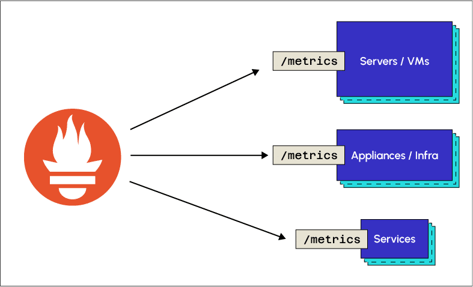

📱 À propos de V-Check
V-Check est une application mobile pensée pour les administrateurs système. Elle permet de surveiller l’état des machines virtuelles directement depuis un smartphone, en s’appuyant sur Prometheus pour la collecte des métriques.
Elle affiche en temps réel l'utilisation du CPU, de la mémoire, du stockage, ainsi que l'état du service DNS. Un outil de diagnostic rapide, accessible n’importe où.
⚙️ Qu'est-ce que Prometheus ?
Prometheus est un outil open-source de monitoring. Il permet de collecter, stocker et visualiser des métriques système en temps réel.
Dans ce projet, il est utilisé pour remonter les données essentielles des VM : CPU, RAM, stockage et statut DNS.

🖥️ Qu’est-ce que Proxmox ?
Proxmox VE est une plateforme open-source de virtualisation. Elle permet de créer et de gérer des machines virtuelles et des conteneurs via une interface web intuitive.

Elle repose sur les technologies KVM et LXC, et se distingue par sa facilité de déploiement, la gestion centralisée des ressources, et des fonctionnalités comme la haute disponibilité ou les snapshots.
Documentation complète
Consultez l'intégralité du projet : code, architecture, et explications techniques.
Voir la documentation